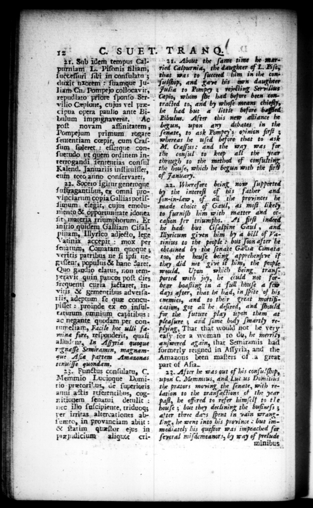

— - — — 4 : 4 : +2 * 9.4 = 19 : 1 29 P 1 — — —ä — — n OR —— cog apt oy — Ce, — l mM * -- - . * Ll — $4 ALSACE SEAS. as a —— 4 — 2 * 7 * — 92 ov 7 _ K rie 8 44 _—_ _ -abi. tat EAGLES; 8 "os - 2 . _ * A a * » „ 2 * + _ * * * 17 C. 8 UE T. TRAN al 21. Sab idem tempus Caln L. Piſemis filiam, ucteſſuri ſibi in conſulatu 3 duxit uxdrem: ſuamque Juliam Cn. Pompe jo collocav ir, . priore ſponſo Servi ilio Cepione, cujus vel præcipua opera paullo ante Bibulum impugnaverat. Ac ſt novam noque 3 patrihus ne ſi ipſi negaſlent, populus & hanc Zarec, Quo gaudi elatus, non temVetavit guin paucos poſt dies Trequentt curia jactaret, inVitis & gementibus adveiſails, adeptum ſe quæ concupiſſet : proinde ex eb inſultaturum omnium capitibus: 20 negante quodam per contumeliam, Facile hoc ulli femine fire, reſponderit, quaſi allud-ns, In Aria quoque r:3zafſe Semiramm, magnamgee Aſce partem Amazonas renuifſe quondam. 23. Functus conſulatu, C. Memmio Lucioque Domitio prætoril us, de ſuperioris anni a Tis referentibus, cogn ĩtionem ſenatui detulit: ne N ſulcipiente, rriduog; der irritas altercationes abtumto, in provinciam abiit: & ſtatim quzſtor ejus in pPrejidicium aliquu criJ n-1 n-law 5 of 21. Abeut the ſume time be merried Calpurnia, the of L. Niſt, that was to him in the conJulſhip, and are bis on daughter Julia to Pompey ; vejelting Servilius Cepia, whom 2 been conE tracted to, and by whoſe means 2 be had 1 * a little before Pibulus. After this new alliance he begun, wpon any debates in the ſenate, to ast Pompey's- obinien firſt whereas he uſed before that to as AM. Craſſus: and the way was for the conſul to — the year” thrauth to the method of conf? ing the houſe, which he begun with the firls off Fanuary. _— 22. I herefere being now * the provinces he made choice of Gaul, as moſt likely to furniſh him with matter and ct. caſion fer nn. i fi indeed be bad but 2 Gaul, and Illyricum given him ” 4 bill of Yarinius to the people > but Joon after be ehtained by the ſenate Gale; C mata too, the heuſe being apprehenſeve if they did nit give # him, the people would, Ten which being. trau ported with je, he could not forbear boaſting in a full biuſe a few. days after, that he bad, in Jpite ef bis enemies, and to their 2 mortificatiun, get all he deſired, and eu for the future play upon them at pleaſure ; ard ſome bed) ſmartly rephjiag, That that would not be very eaſy tor a woman to de, he merriiy anſwered again, that Semiramis had formerly reigned in Aſſyria, and the Amazons been maſters of .a great part of Aſia. f 23. After be was gut ef his conſu'ſhip, | ub C. Memmius, and Luc us Domitius the pretors moving the ſenate, with relation to the tranſattions of the year aft, be offered te refer 2 to tle re e 3 but they dechlinirg the buſsneſs ; atter three dans K in vain wrangling, be went into bis province but immediately his quefrer was impeached fer ſereral miſdemeancrs, by way of prelude minibus . | the intereſt 4 bis father and 0 a
